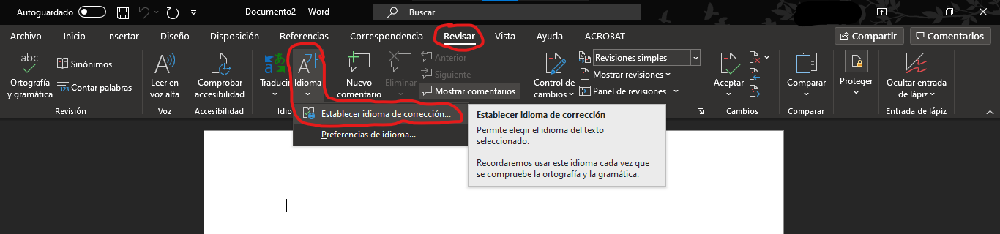
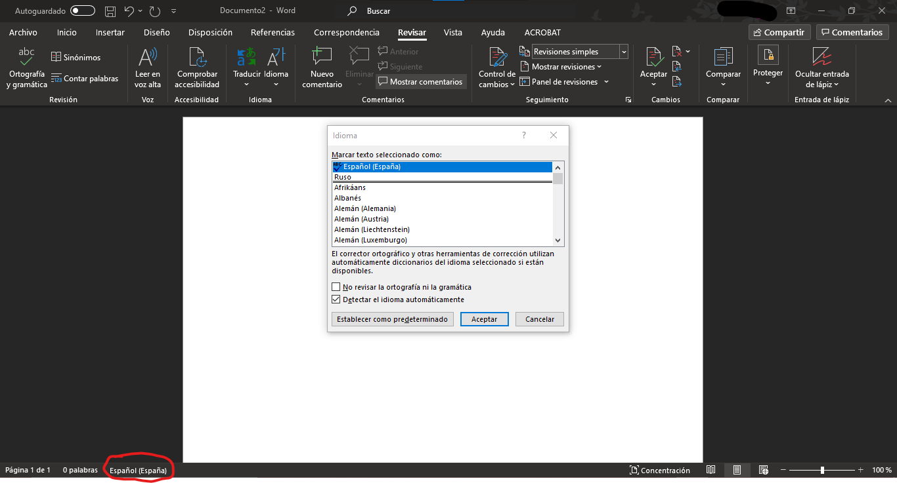
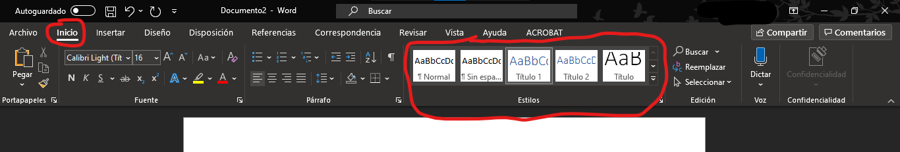
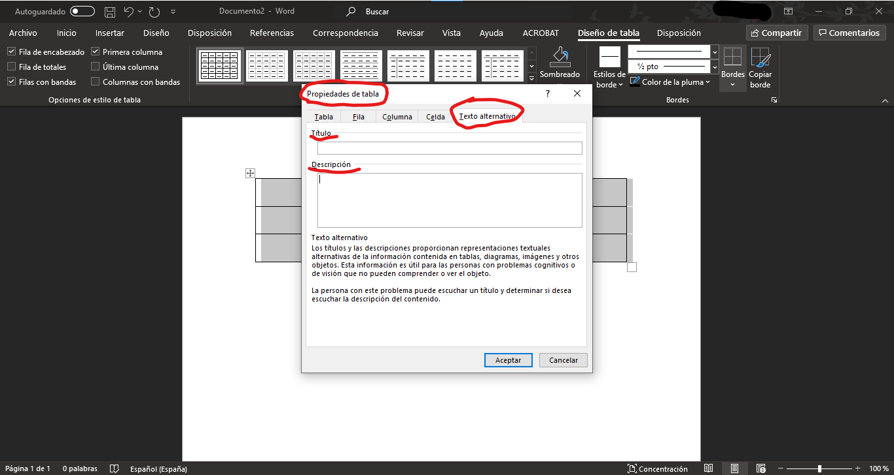
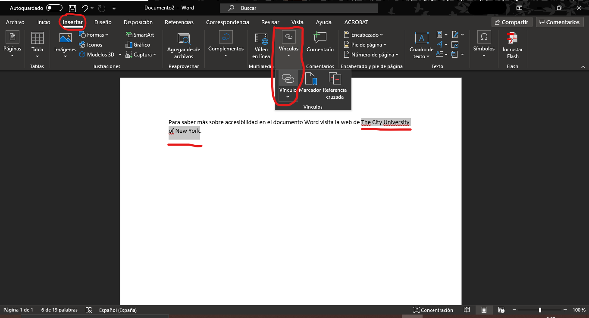
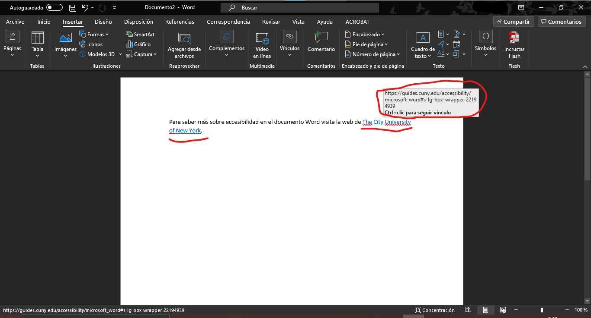

Accesibilidad en Microsoft Word
Leire Altamira
Marzo de 2021
Introducción
Microsoft Word
- Hoy en día es común crear documentos a través de Word.
- Es la herramienta principal utilizada por la mayoría de la gente.
- La creación de contenidos accesibles en Word no es muy complicada, siempre que se tengan claras las pautas básicas.
¿Por qué crear documentos Word accesibles?
- Permite que los documentos lleguen a la mayor población posible.
- Es útil para las personas que no tienen dificultades.
- Hace más fácil la navegación a través del contenido.
- Si se tiene preparado un documento accesible, se evita perder el tiempo después en caso de que alguien pida que sea accesible.
Pautas para crear documentos Word accesibles
Pautas de accesibilidad
- Idioma del documento
- Tipografía y legibilidad del contenido
- Estructura del documento
- Orden lógico y coherente
- Niveles de título y títulos descriptivos
- Índice
- Contenido del documento
- Texto accesible
- Imágenes y tablas
- Enlaces
- Comprobador de accesibilidad en Word
1. Pautas sobre el idioma del documento
1. Idioma del documento
Siempre debe indicarse el idioma en que está escrito un texto. Esto es fundamental para que el sofware pueda realizar su función correctamente.
Ejemplo: un software que convierta el texto a voz.
1. Idioma del documento
¿Cómo se establece el idioma en un documento Word?
- Existen varias formas para cambiar el idioma.
- Pestaña “Revisar” -> “Idioma” -> “Establecer idioma de corrección”
- Es aconsejable activar la opción “Detectar el idioma automáticamente”.
1. Idioma del documento


2. Pautas sobre la tipografía y legibilidad del contenido
2. Tipografía y legibilidad del contenido
- Esta pauta de accesibilidad se refiere a la facilidad de lectura de un documento.
- Referencia a: tipo de letra, tamaño, estilo y alineación utilizada.
- Existen dos tipos de letra básicos: las Serif y las Sans Serif.
2. Tipografía y legibilidad del contenido: Serif vs. Sans Serif
| Serif | Sans Serif |
|---|---|
| Fuentes más legibles para el texto impreso. | Fuentes más legibles para el contenido web. |
| Times y Times New Roman. | Verdana, Tahoma, Georgia y Trebuchet MS. |
2. Tipografía y legibilidad del contenido: Serif vs. Sans Serif
2. Tipografía y legibilidad del contenido
- El tamaño de la fuente deberá ser de 12 o 14 puntos.
- Prevalecerá el estilo normal. Se evitarán la cursiva, el subrayado o efectos de texto como sombreado, ya que dificultan la lectura.
- Se deberá cuidar el interlineado: ni muy junto ni muy separado. Entre un 25% o 30% superior al tamaño de la letra.
2. Tipografía y legibilidad del contenido
- El texto debe estar en horizontal y justificado a la izquierda.
- El color de la letra y el fondo deben tener el mejor contraste posible.
- Evitar el uso de imágenes de fondo, texturas y colores de fondo.
3. Pautas sobre la estructura del documento
3. Estructura del documento
- La estructura del documento tendrá que seguir un orden lógico y coherente.
- Títulos descriptivos.
- Uso de estilos integrados para estructurar y organizar el documento de forma jerárquica con apartados y subapartados.
3. Estructura del documento
- El índice del documento permite una navegación rápida de los documentos largos.
- Word crea una Tabla de contenido o índice de forma automática desde el menú “Referencias”, gracias al uso de la herramienta “Estilos” de título.
3. Estructura del documento: los estilos integrados

3. Estructura del documento: generación del índice

4. Pautas sobre el contenido del documento
4. Contenido del documento: texto accesible
El texto accesible está relacionado con una lectura fácil. Para ello, se recomienda seguir unas buenas prácticas:
4. Contenido del documento: texto accesible
Nivel de palabra
- No usar palabras difíciles, poco habituales o muy técnicas (si se necesita usar este vocabulario, se deberán explicar los términos).
- Evitar el uso de siglas.
- Evitar palabras en otro idioma.
- Evitar metáforas.
- Usar ejemplos para ilustrar la teoría.
4. Contenido del documento: texto accesible
Nivel de frase
- Frases cortas y en forma afirmativa.
- Separar cada idea con un punto.
- Intentar usar tiempos verbales en presente.
- Explicar ideas o términos en el texto en vez de usar notas a pie de página.
- Evitar expresiones redundantes.
- No poner mucho texto en una página y separar los párrafos con una línea en blanco.
4. Contenido del documento: imágenes
- Todas las imágenes del documento deberán ir acompañadas de un texto alternativo.
- Las imágenes deberán ir acompañadas de una descripción textual que explique su contenido para aquellos lectores con problemas de visión que necesiten apoyo auditivo.
- Uso de título o rótulo en el pie de la imagen.
4. Contenido del documento: tablas
- Uso de tablas para mostrar datos, pero sin centrarse en el diseño.
- Uso de texto alterntivo para las tablas y gráficos para que sean visibles para todos los lectores.
- Se deberán acompañar las tablas complejas con un transcripción detallada.
- Su formato estructurado y visual facilita la comprensión de los datos y ahorra espacio.
4. Contenido del documento: tablas
Recomendaciones:
- Estructura simple y uniforme.
- Título significativo.
- Los encabezados de columna deben especificar la información que contiene.
4. Contenido del documento: creación de tablas

4. Contenido del documento: tablas con texto alternativo y título
Pasos para añadir un texto alternativo:
- Con la tabla seleccionada -> click en botón derecho.
- Seleccionar “Propiedades tabla”.
- Dentro de la nueva ventana -> seleccionar la pestaña “Texto alternativo”.
- Añadir el título de la tabla.
- Añadir una descripción de la tabla.
4. Contenido del documento: tablas con texto alternativo

4. Contenido del documento: enlaces
Para crear enlaces accesibles en Word se deberá evitar poner la dirección completa http. Se creará un hipervínculo sobre un texto explicativo del enlace del enlace.
4. Contenido del documento: enlaces
Para crear enlaces accesibles se seguirán los siguientes pasos:
- Copiar la dirección http.
- Seleccionar el texto explicativo que queramos convertir en hipervínculo.
4. Contenido del documento: enlaces
- Acceder a la pestaña “Insertar” -> “Vínculos” -> “Vínculo” (se abrirá la ventana “Insertar hipervínculo”) -> Seleccionar “Archivo o página web existente” -> Escribir en el cuadro de texto “Dirección” -> Seleccionar “Aceptar”.
- El resultado es que el texto seleccionado previamente se habrá puesto de color azul y subrayado. Si se pasa el ratón se verá la interactividad.
4. Contenido del documento: enlaces
- Si se hace ctrl+click, te llevará a la página web vinculada.
4. Contenido del documento: enlaces

4. Contenido del documento: enlaces

4. Contenido del documento: enlaces

5. Comprobador de accesibilidad en Word
5. Comprobador de accesibilidad en Word
El comprobador de accesibilidad en Word está integrada en el programa y nos permite comprobar que cumplimos con los resquisitos de accesibilidad.
Seleccionar ventana “Revisar” -> hacer click en “Comprobar accesibilidad”
5. Comprobador de accesibilidad en Word

5. Comprobador de accesibilidad en Word: errores
Dependiendo del nivel de gravedad del problema, el comprobador hace la siguiente clasificación:
- Error: el documento es difícil o imposible de leer.
- Advertencia: en algunos casos el contenido es difícil de comprender.
- Sugerencia: contenido que personas on dificultades pueden comprender, pero es mejorable.
6. Más información
Para obtener más información de sobre accesibilidad de documentos Word, mira la web de The City University of New York.